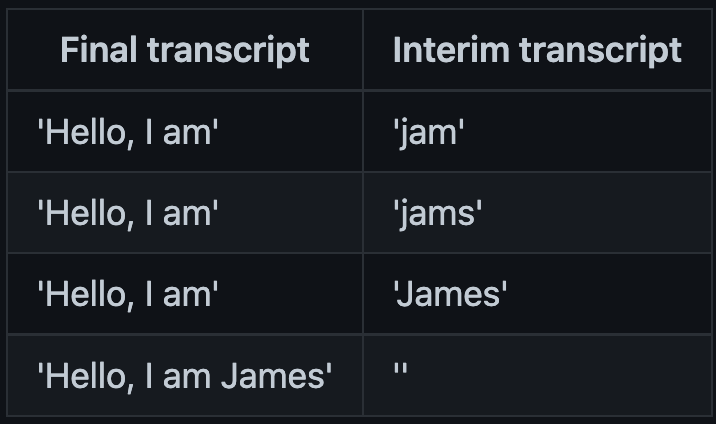

React Speech Recognition API docs
Interface
useSpeechRecognition
React hook for consuming speech recorded by the microphone. Import with:
import { useSpeechRecognition } from 'react-speech-recognition'
Input props
These are passed as an object argument to useSpeechRecognition:
useSpeechRecognition({ transcribing, clearTranscriptOnListen, commands })
transcribing [bool]
Is this component collecting a transcript or not? This is independent of the global listening state of the microphone. true by default.
clearTranscriptOnListen [bool]
Does this component clear its transcript when the microphone is turned on? Has no effect when continuous listening is enabled. true by default.
commands [list]
See Commands.
Output state
These are returned from useSpeechRecognition:
const {
transcript,
interimTranscript,
finalTranscript,
resetTranscript,
listening,
browserSupportsSpeechRecognition,
isMicrophoneAvailable,
} = useSpeechRecognition()
transcript [string]
Transcription of all speech that has been spoken into the microphone. Is equivalent to the final transcript followed by the interim transcript, separated by a space.
resetTranscript [function]
Sets transcript to an empty string.
listening [bool]
If true, the Web Speech API is listening to speech from the microphone.
interimTranscript [string]
Transcription of speech that the Web Speech API is still processing (i.e. it's still deciding what has just been spoken).
For the current words being spoken, the interim transcript reflects each successive guess made by the transcription algorithm. When the browser’s confidence in its guess is maximized, it is added to the final transcript.
The difference between interim and final transcripts can be illustrated by an example over four iterations of the transcription algorithm:
finalTranscript [string]
Transcription of speech that the Web Speech API has finished processing.
browserSupportsSpeechRecognition [bool]
The Web Speech API is not supported on all browsers, so it is recommended that you render some fallback content if it is not supported by the user's browser:
if (!browserSupportsSpeechRecognition) {
// Render some fallback content
}
browserSupportsContinuousListening [bool]
Continuous listening is not supported on all browsers, so it is recommended that you apply some fallback behaviour if your web app uses continuous listening and is running on a browser that doesn't support it:
if (browserSupportsContinuousListening) {
SpeechRecognition.startListening({ continuous: true })
} else {
// Fallback behaviour
}
isMicrophoneAvailable [bool]
The user has to give permission for their microphone to be used before transcription can begin. They are asked for permission when react-speech-recognition first tries to start listening. This state will become false if they deny access. In this case, it's advised that you disable voice-driven features and indicate that microphone access is needed for them to work.
if (!isMicrophoneAvailable) {
// Render some fallback content
}
SpeechRecognition
Object providing functions to manage the global state of the microphone. Import with:
import SpeechRecognition from 'react-speech-recognition'
Functions
startListening (async)
Start listening to speech.
SpeechRecognition.startListening()
This is an asynchronous function, so it will need to be awaited if you want to do something after the microphone has been turned on.
It can be called with an options argument. For example:
SpeechRecognition.startListening({
continuous: true,
language: 'zh-CN'
})
The following options are available:
continuous [bool]
By default, the microphone will stop listening when the user stops speaking (continuous: false). This reflects the approach taken by "press to talk" buttons on modern devices.
If you want to listen continuously, set the continuous property to true when calling startListening. The microphone will continue to listen, even after the user has stopped speaking.
SpeechRecognition.startListening({ continuous: true })
language [string]
To listen for a specific language, you can pass a language tag (e.g. 'zh-CN' for Chinese) when calling startListening.
SpeechRecognition.startListening({ language: 'zh-CN' })
Some known supported languages (based on this Stack Overflow post):
- Afrikaans
af - Basque
eu - Bulgarian
bg - Catalan
ca - Arabic (Egypt)
ar-EG - Arabic (Jordan)
ar-JO - Arabic (Kuwait)
ar-KW - Arabic (Lebanon)
ar-LB - Arabic (Qatar)
ar-QA - Arabic (UAE)
ar-AE - Arabic (Morocco)
ar-MA - Arabic (Iraq)
ar-IQ - Arabic (Algeria)
ar-DZ - Arabic (Bahrain)
ar-BH - Arabic (Lybia)
ar-LY - Arabic (Oman)
ar-OM - Arabic (Saudi Arabia)
ar-SA - Arabic (Tunisia)
ar-TN - Arabic (Yemen)
ar-YE - Czech
cs - Dutch
nl-NL - English (Australia)
en-AU - English (Canada)
en-CA - English (India)
en-IN - English (New Zealand)
en-NZ - English (South Africa)
en-ZA - English(UK)
en-GB - English(US)
en-US - Finnish
fi - French
fr-FR - Galician
gl - German
de-DE - Greek
el-GR - Hebrew
he - Hungarian
hu - Icelandic
is - Italian
it-IT - Indonesian
id - Japanese
ja - Korean
ko - Latin
la - Mandarin Chinese
zh-CN - Taiwanese
zh-TW - Cantonese
zh-HK - Malaysian
ms-MY - Norwegian
no-NO - Polish
pl - Pig Latin
xx-piglatin - Portuguese
pt-PT - Portuguese (Brasil)
pt-br - Romanian
ro-RO - Russian
ru - Serbian
sr-SP - Slovak
sk - Spanish (Argentina)
es-AR - Spanish (Bolivia)
es-BO - Spanish (Chile)
es-CL - Spanish (Colombia)
es-CO - Spanish (Costa Rica)
es-CR - Spanish (Dominican Republic)
es-DO - Spanish (Ecuador)
es-EC - Spanish (El Salvador)
es-SV - Spanish (Guatemala)
es-GT - Spanish (Honduras)
es-HN - Spanish (Mexico)
es-MX - Spanish (Nicaragua)
es-NI - Spanish (Panama)
es-PA - Spanish (Paraguay)
es-PY - Spanish (Peru)
es-PE - Spanish (Puerto Rico)
es-PR - Spanish (Spain)
es-ES - Spanish (US)
es-US - Spanish (Uruguay)
es-UY - Spanish (Venezuela)
es-VE - Swedish
sv-SE - Turkish
tr - Zulu
zu
stopListening (async)
Turn the microphone off, but still finish processing any speech in progress.
SpeechRecognition.stopListening()
This is an asynchronous function, so it will need to be awaited if you want to do something after the microphone has been turned off.
abortListening (async)
Turn the microphone off, and cancel the processing of any speech in progress.
SpeechRecognition.abortListening()
This is an asynchronous function, so it will need to be awaited if you want to do something after the microphone has been turned off.
getRecognition
This returns the underlying object used by Web Speech API.
applyPolyfill
Replace the native Speech Recognition engine (if there is one) with a custom implementation of the W3C SpeechRecognition specification. If there is a Speech Recognition implementation already listening to the microphone, this will be turned off. See Polyfills for more information on how to use this.
SpeechRecognition.applyPolyfill(SpeechRecognitionPolyfill)